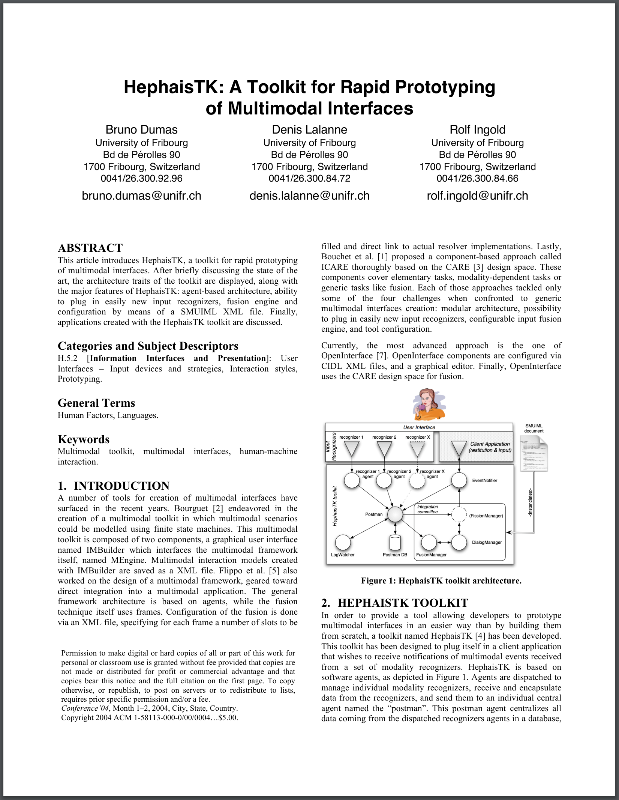
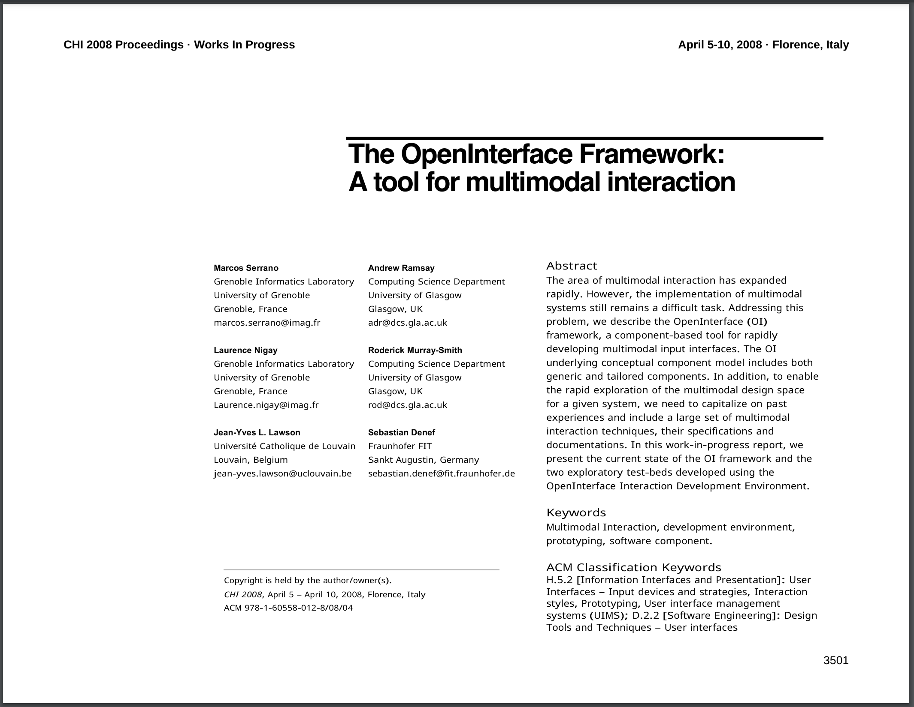
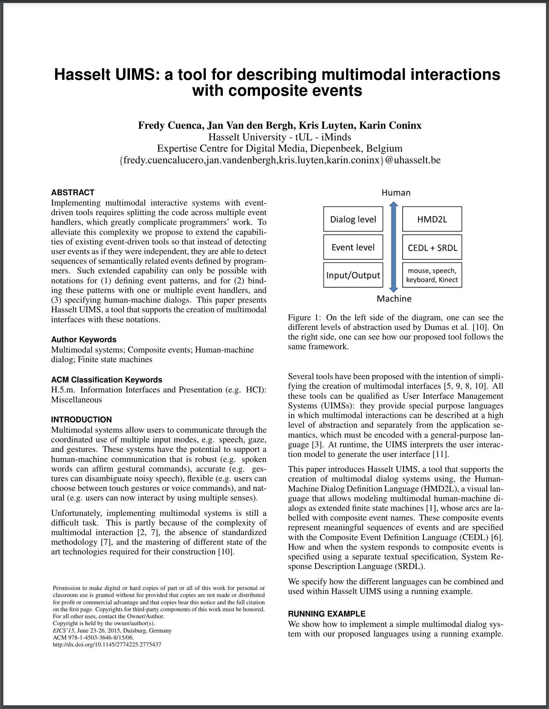
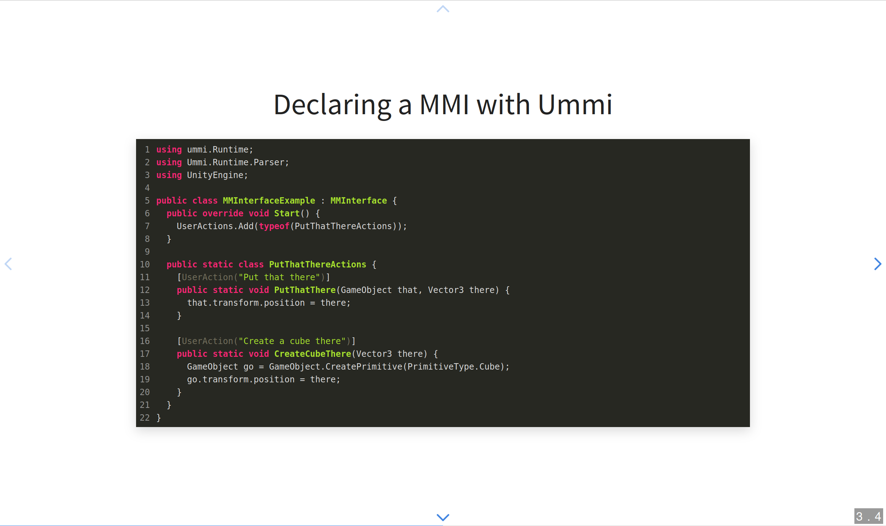
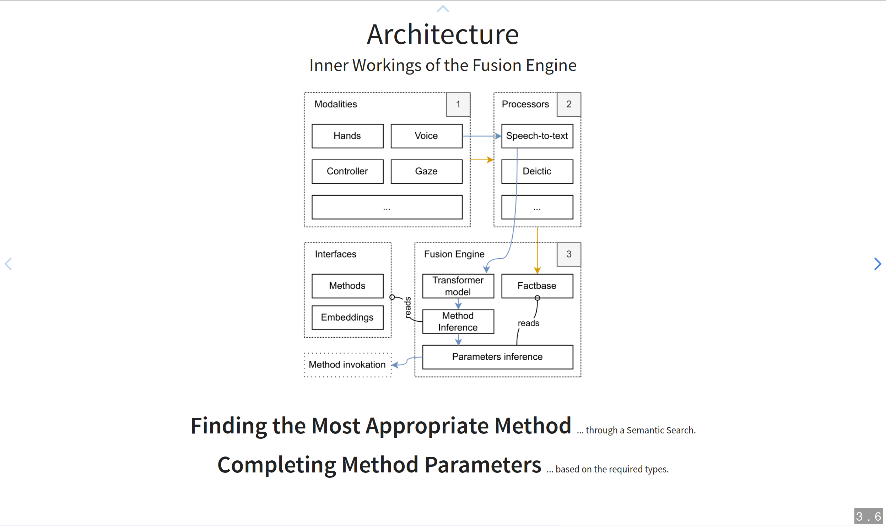
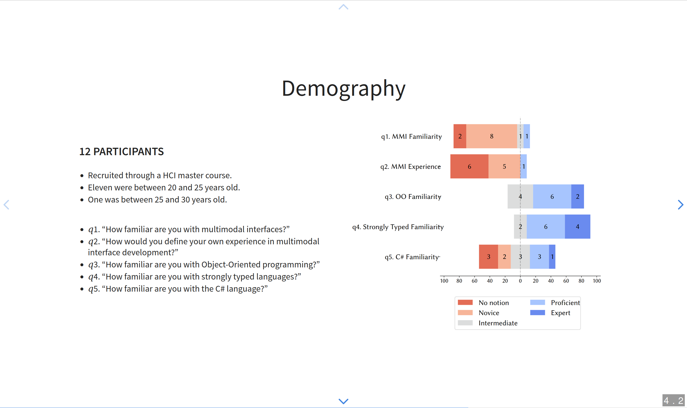
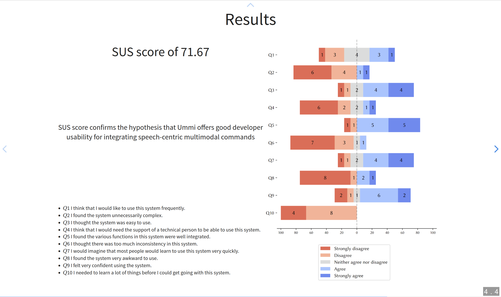

Exploiting Semantic Search and Object-Oriented Programming to Ease Multimodal Interface Development


Multimodal Interaction
Frameworks and Toolkits

HephaisTK

OpenInterface

HasseltUIMS
Trade off
between usability and expressiveness

🗙
🗙
event putThatThere = speech.put; speech.that + mouse.down〈x1, y1〉; speech.there + mouse.down〈x2, y2〉;
🗙
event putThatThere = speech.put; speech.that + mouse.down〈x1, y1〉; speech.there + mouse.down〈x2, y2〉;
event putThisThere = speech.put; speech.this + mouse.down〈x1, y1〉; speech.there + mouse.down〈x2, y2〉;
🗙
event putThatThere = speech.put; speech.that + mouse.down〈x1, y1〉; speech.there + mouse.down〈x2, y2〉;
event putThisThere = speech.put; speech.this + mouse.down〈x1, y1〉; speech.there + mouse.down〈x2, y2〉;
event putThatHere = speech.put; speech.that + mouse.down〈x1, y1〉; speech.here + mouse.down〈x2, y2〉;
event putThisHere = speech.put; speech.this + mouse.down〈x1, y1〉; speech.here + mouse.down〈x2, y2〉;
Language tend to be integrated through verbosity
🗙
event putThatThere = speech.put; speech.that + mouse.down〈x1, y1〉; speech.there + mouse.down〈x2, y2〉;
event putThisThere = speech.put; speech.this + mouse.down〈x1, y1〉; speech.there + mouse.down〈x2, y2〉;
event putThatHere = speech.put; speech.that + mouse.down〈x1, y1〉; speech.here + mouse.down〈x2, y2〉;
event putThisHere = speech.put; speech.this + mouse.down〈x1, y1〉; speech.here + mouse.down〈x2, y2〉;
event moveThatThere = speech.move; speech.that + mouse.down〈x1, y1〉; speech.there + mouse.down〈x2, y2〉;
event moveThisThere = speech.move; speech.this + mouse.down〈x1, y1〉; speech.there + mouse.down〈x2, y2〉;
event moveThatHere = speech.move; speech.that + mouse.down〈x1, y1〉; speech.here + mouse.down〈x2, y2〉;
event moveThisHere = speech.move; speech.this + mouse.down〈x1, y1〉; speech.here + mouse.down〈x2, y2〉;
UMMI
Fusion Engine
Speech Centric Fusion Engine for Unity
Keeping a high usability for the developer, and a high expressivity for the end user.
Object-Oriented Programming
Abstract the processing of modalities from the declaration of the multimodal interface
Semantic search approach


Ease the integration of language as a modality
Declaring a MMI with Ummi
using ummi.Runtime;
using Ummi.Runtime.Parser;
using UnityEngine;
public class MMInterfaceExample : MMInterface {
public override void Start() {
UserActions.Add(typeof(PutThatThereActions));
}
public static class PutThatThereActions {
[UserAction("Put that there")]
public static void PutThatThere(GameObject that, Vector3 there) {
that.transform.position = there;
}
}
}
Declaring a MMI with Ummi
using ummi.Runtime;
using Ummi.Runtime.Parser;
using UnityEngine;
public class MMInterfaceExample : MMInterface {
public override void Start() {
UserActions.Add(typeof(PutThatThereActions));
}
public static class PutThatThereActions {
[UserAction("Put that there")]
public static void PutThatThere(GameObject that, Vector3 there) {
that.transform.position = there;
}
[UserAction("Create a cube there")]
public static void CreateCubeThere(Vector3 there) {
GameObject go = GameObject.CreatePrimitive(PrimitiveType.Cube);
go.transform.position = there;
}
}
}
Architecture
How does it work?
Architecture
Fusion Example
Finding the Most Appropriate Method
... through a Semantic Search.
Completing Method Parameters
... based on the required types.
Evaluation
Does it offer a good developer usability for integrating speech-centric multimodal commands?
Demography
12 participants
- Recruited through a HCI master course.
- Eleven were between 20 and 25 years old.
- One was between 25 and 30 years old.
- 𝑞1. “How familiar are you with multimodal interfaces?”
- 𝑞2. “How would you define your own experience in multimodal interface development?”
- 𝑞3. “How familiar are you with Object-Oriented programming?”
- 𝑞4. “How familiar are you with strongly typed languages?”
- 𝑞5. “How familiar are you with the C# language?”
Experiment Setup
2 sessions
40" long introduction
- Multimodal interface challenges
- Ummi's approach
- Setup the experiment environment
60" long experiment
- Quick reminder
- Mockup of Ummi
- Had to write an interface, not a processor
- Seven actions
- Write the methods signature
- SUS questionnaire
Results
SUS score of 71.67
SUS score confirms the hypothesis that Ummi offers good developer usability for integrating speech-centric multimodal commands
- 𝑄1 I think that I would like to use this system frequently.
- 𝑄2 I found the system unnecessarily complex.
- 𝑄3 I thought the system was easy to use.
- 𝑄4 I think that I would need the support of a technical person to be able to use this system.
- 𝑄5 I found the various functions in this system were well integrated.
- 𝑄6 I thought there was too much inconsistency in this system.
- 𝑄7 I would imagine that most people would learn to use this system very quickly.
- 𝑄8 I found the system very awkward to use.
- 𝑄9 I felt very confident using the system.
- 𝑄10 I needed to learn a lot of things before I could get going with this system.
Summary




Further information
Processor Example
public class MouseProcessor : Processor {
private void Update() {
if (IsClicked()) OnClick(InputToRay());
}
private void OnClick(Ray ray) {
if (Camera.main is null) return;
int sequenceID = Time.frameCount;
WriteFact(ray, sequenceID);
if (Physics.Raycast(ray, out RaycastHit hit, 250)) {
WriteFact(hit.collider.gameObject, sequenceID);
WriteFact(hit.point, sequenceID);
}
}
protected bool IsClicked() {
return Input.GetMouseButtonDown((int)MouseButton.LeftClick);
}
protected Ray InputToRay() {
return Camera.main!.ScreenPointToRay(Input.mousePosition);
}
}